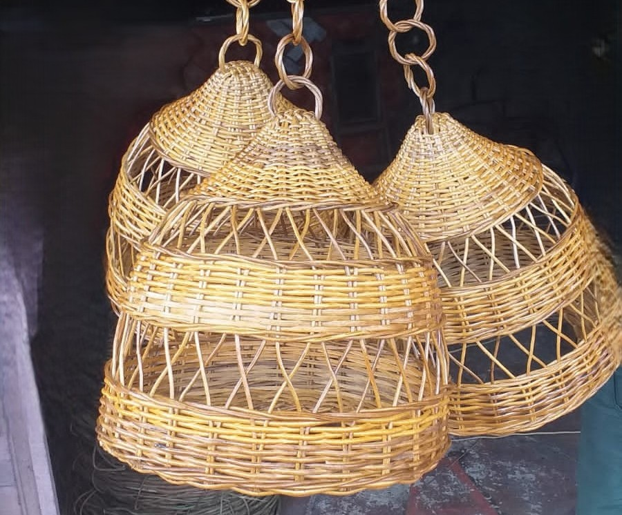
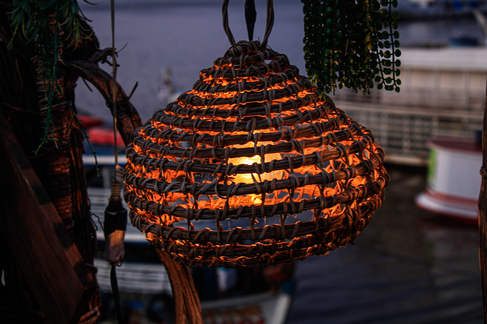
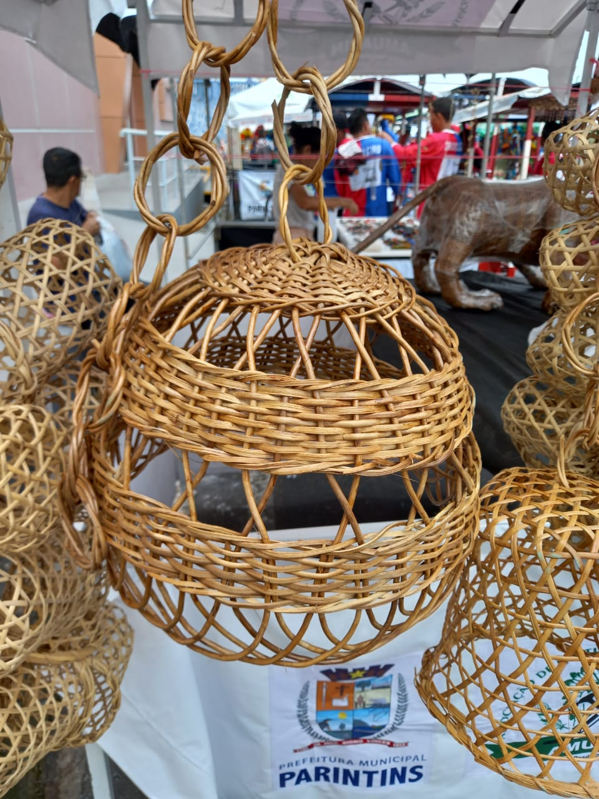

Trama &
Forma

Luminária
Produzida artesanalmente com cipó titica.
R$ 50,00
Luminária
Peça sofisticada inspirada na floresta amazônica.
R$ 50,00
Luminária
Design exclusivo para hotéis e ambientes temáticos.
R$ 590,00
Luminária
Design exclusivo para hotéis e ambientes temáticos.
R$ 50,00